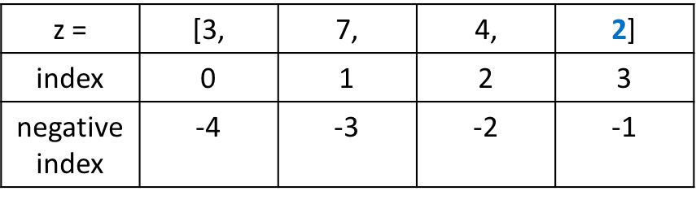

Py4 Data Structures
In this course, you will learn about Python data structures which includes List, Tuple, Set, and Dictionary. You will also learn about the different methods of each.
List in Python
Basically, there are four different collections of data types in Python: list, set, tuple and dictionary.
List:
listin Python is written as comma-separated values inside square brackets.- It's ordered (by index) and changeable. It can also have duplicate values.
Let's see an example,
list_one = [1, 2, 3, 4, 5]
list_two = ['a', 'b', 'c', 'd']
list_three = [1, 2, 3, 'a','b']
list_four = [1, 1, 1, 'a','a']
In the above example you see different list examples, now take a deep dive into the list.
Create a List
For creating a list just see above example, we need to define different comma-separated items or values in square brackets.
Let's take an example of creating a list of 1 to 5 numbers
number_list = [1, 2, 3, 4, 5]
print(number_list)
[1, 2, 3, 4, 5]
Let's take an example of creating a list of 4 different colors:
colors = ['orange', 'white', 'green', 'blue']
print(colors)
['orange', 'white', 'green', 'blue']
Accessing Items or Values from the List
The list can be accessible by its index or position. For a better understanding of this just see below diagram of the list.

In this above diagram, you can see that a list has two types of index. First one is a positive index and the second is a negative index.
When using a positive index, the first item in a list starts at 0, NOT 1. This is common in most programming languages.
Let's access above diagram list in example by both positive and negative index.
z = [3, 7, 4, 2]
print(z[0])
3
print(z[2])
4
print(z[-1])
2
print(z[-4])
3
Exercise #1:
- Create some lists of your own.
- Print each list, then try printing some items from the lists using the index.
- Do not delete these lists, you will need them later for other exercises.
Change Value or Item in List.
In a previous topic, we learned about the index and with the help of that, we will change the item of a list.
Let's understand how to change an item in the list using an example.
colors = ['red', 'green', 'yellow', 'blue']
#Here we want to change yellow color to white in list so index of yellow color is 2
#access the index and set new value
colors[2] = 'white'
print(colors)
['red', 'green', 'white', 'blue']
list_of_number = [1, 2, 3, 4, 5, 6]
#Now we want to change numbers 4 and 5 and replace them with 1 and 1
#number 4 index is 3 and number 5 index is 4
list_of_number[3] = 1
list_of_number[4] = 1
print(list_of_number)
[1, 2, 3, 1, 1, 6]
Exercise:
- Using the lists you created in exercise 1, try changing some of the items using the index.
We just covered the basics about a list. It's time to learn about the different methods (operations) of a list.
Different inbuilt methods of a list are:
append()- it adds an item to the list at the endinsert()- add item in the list based on the specified indexremove()- remove the item from the listpop()- removeclear()- clear all items from the listlen()- find thelengthof the list. In other words, the number of items in the list.sort()- sorts the listreverse()- reverses the listindex()- returns the index of an item
append() method of list:
Append method of the list adds an item at the end of the list. Let's understand by example:
colors = ['red', 'green']
print(colors)
['red', 'green']
colors.append('blue')
print(colors)
['red', 'green', 'blue']
number_list = [1, 2, 3, 4]
print(number_list)
[1, 2, 3, 4]
number_list.append(5)
print(number_list)
[1, 2, 3, 4, 5]
insert() method of list:
It inserts the item in the list based on a specified index of the list.
Let's see an example for a better understanding of insert() method of the list.
colors = ['red', 'blue', 'green']
#Now we want to add 'white' color at index 2 (The third position; first item starts at 0, remember?)
colors.insert(2, "white")
print(colors)
['red', 'blue', 'white', 'green']
It's very simple, we just need to specify where we want to add the new item in the list.
remove() method of list:
It removes the specified item from a given list (using the name of the item, not the index). Let's see it by example:
animal = ['cat', 'dog', 'horse', 'lion']
print(animal)
['cat', 'dog', 'horse', 'lion']
#Now we want to remove 'horse' from list
animal.remove('horse')
print(animal)
['cat', 'dog', 'lion']
If the item is not in the list, you will get an error!:
animal = ['cat', 'dog', 'horse', 'lion']
print(animal)
['cat', 'dog', 'horse', 'lion']
#Now we want to remove 'zebra' from list
animal.remove('zebra')
Traceback (most recent call last):
File "main.py", line 3, in <module>
animal.remove('zebra')
ValueError: list.remove(x): x not in list
Exercise:
create a list: colors = ['red','green','red','blue','yellow']- Remove 'red' using the
remove()method. - Print the list. What did you notice? How many 'red' are in the list?
- Using your lists from exercise 1, practice using the append, insert, and remove methods.
pop() method of list:
The pop method of the list removes the specified index (or the last item from the list if no index is given). Let's take the same above list and see an example of the pop method:
animal = ['cat', 'dog', 'horse', 'lion']
print(animal)
['cat', 'dog', 'horse', 'lion']
animal.pop()
print(animal)
['cat', 'dog', 'horse']
people = ['Jim', 'Kim','Jon','Ken']
people.pop(1)
print(people)
['Jim','Jon','Ken']
del keyword of Python:
The del keyword is not specific to lists only, it can be used on any object. Since everything in Python is an object, it can be used to delete lists and parts of a list also.
Basically, two different uses of del:
- delete item based on the specified index
- delete entire list
Let's take an example of both to understand del in terms of List:
animal = ['cat', 'dog', 'horse', 'lion']
print(animal)
['cat', 'dog', 'horse', 'lion']
#Now we want to remove the 1st item - at index 0
del animal[0]
print(animal)
['dog', 'horse', 'lion']
#Now want to delete the list itself
del animal
print(animal)
Traceback (most recent call last):
File "<stdin>", line 1, in <module>
NameError: name 'animal' is not defined
Here you can see the Error shows that the animal list is not defined. This confirms that it was deleted.
clear() method of list:
The clear method of a list doesn't delete the complete list. It removes all the items from the list so the list will become empty. Let's take the same above list and see an example:
animal = ['cat', 'dog', 'horse', 'lion']
print(animal)
['cat', 'dog', 'horse', 'lion']
animal.clear()
print(animal)
[]
As you can see in the above example, the list is empty.
Exercise:
- Practice with pop, del, and clear using the lists created in exercise 1.
Find the length of the list and check if the list exists or not.
To find the length of the list in Python use the len() method, which shows the how many items available in the list.
Let's see with the help of an example:
number_list = [1, 2, 3, 4, 5]
#Now find the length of list
print(len(number_list))
5
#store length in a variable
total_items = len(number_list)
print(total_items)
5
#Now find list is exist or not
if number_list:
print("List exist")
else:
print("List not exist")
List exist
#Now we delete the list again check
del number_list
if number_list:
print("List exist")
else:
print("List not exist")
List not exist
In the above example, you have seen how to find the length of the list and how to check a list exists or not.
Using the in keyword:
The in keyword is used for checking if an element exists in a list or not:
mylist = ['batman','spiderman','flash','barbie','gi joe','superwomen']
print('superman' in mylist)
False
print('batman' in mylist)
True
Exercise:
create a list: colors = ['red','green','red','blue','yellow']- Print the length of the list.
- Check if the list exists or not.
- Check for the following items in the list and print the results: 'indigo', 'blue', 'violet', 'pink', 'red'.
index() method of list:
mylist = ['Ben','Mike','Jon','Stacey']
print(mylist.index('Jon'))
2
print(mylist.index('Mike'))
2
Creating a list from a string using split() and list() methods.
Syntax: string.split(separator, maxsplit)
The split() method is a string method used for turning a string into a list. It takes two optional parameters: separator, maxsplit.
name = "Ben Davis"
#no separator: the string will be split anywhere that there is a space
name_list = name.split()
prit(name_list)
['Ben', 'Davis']
sent = "how are you?"
print(sent.split())
['how', 'are', 'you?']
#using a separator
sent = "how-are-you?"
print(sent.split("-"))
['how', 'are', 'you?']
Using list(). Let's see some examples of using list():
name = "Brian"
letters = list(name)
print(letters)
['B', 'r', 'i', 'a', 'n']
Exercise:
- Using the following string:
Please% can #you, %so #me #rando#m strin%g her%e..., how %old *are you, *some random string here! - Split the string using the separator: %
- Split the string using the separator: ,
- Split the string using the separator: #
- Split the string using the separator: *
- Split the string using no separator.
- Use list() on the string.
sort() method of list:
Syntax: list.sort(reverse=True|False, key=myFunc)
Let's see and example:
nums = [1,4,7,2,5,9,8]
nums.sort()
print(nums)
[1, 2, 4, 5, 7, 8, 9]
animals = ['dog', 'cat', 'zebra', 'horse']
animals.sort()
print(animals)
['cat', 'dog', 'horse', 'zebra']
nums = [1,4,7,2,5,9,8]
nums.sort(reverse=True) #passing in True for reverse parameter sorts the list in reverse order
print(nums)
[9, 8, 7, 5, 4, 2, 1]
reverse() method of list:
Let's see and example:
nums = [1,2,3,4,5,6,7]
nums.reverse()
print(nums)
[7, 6, 5, 4, 3, 2, 1]
Don't confuse
reverse() with sort(reverse=True). They are not the same! reverse() only reverses the order, it does not sort the list. See example below:nums = [1,4,3,8,2,6,7]
nums.reverse()
print(nums)
[7, 6, 2, 8, 3, 4, 1] #no sorting was done, only reversing of the list
Looping through a List - access list members using a loop:
It' very easy to access list members using a loop. You learned about the loops in the previous course.
Let's print the list members using a loop in the example:
number_list = [1, 2, 3, 4, 5, 6, 7, 8]
for item in number_list:
print(item)
1
2
3
4
5
6
7
8
colors = ['red', 'green', 'yellow', 'blue']
for color in colors:
print(color)
red
green
yellow
blue
Another way to loop through a list is by using the range() function combined with the len() function:
colors = ['red', 'green', 'yellow', 'blue']
count = len(colors) #get the number of iterations for the range() function
for index in range(count):
print(index,colors[index])
0 red
1 green
2 yellow
3 blue
You see in the above examples it's very easy to loop through a list.
Slicing in List:
Python has amazing features which let us slice the list as per desire requirement. Let's see an example of different slicing.
list_name[start_index : end_index]
number_list = [1, 2, 3, 4, 5, 6, 7, 8]
#Now let's say that we really want the sub-elements 2, 3, and 4 returned in a new list.
print(number_list[1:4])
[2, 3, 4]
print(number_list[2:])
[3, 4, 5, 6, 7, 8]
my_list = ['p','r','o','g','r','a','m']
print(my_list[2:5])
['o', 'g', 'r']
# elements from the beginning to 4th element
print(my_list[:-3])
['p', 'r', 'o', 'g']
Exercise:
- Practice sort, reverse, and looping through the lists created in exercise 1.
Extending list in Python:
We can extend the list with the help of + in python.
a = [1, 2, 3, 5]
b = [7, 8, 9]
print(a+b)
[1, 2, 3, 5, 7, 8, 9]
extending same list with one or more time
print(a * 2)
[1, 2, 3, 5, 1, 2, 3, 5]
Let's look at some additional useful methods provided by the random module:
random.choice(sequence)- picks a random item from a sequence or string (it does not change the original sequence)random.sample(sequence, size)- picks a random sample of items from a sequence based on size given (it does not change the original sequence)random.shuffle(sequence)- shuffles a sequence (it changes the original sequence)
Now some examples of each. (Make sure to import random at the top of your script)
choice():
import random
number_list = [1, 2, 3, 4, 5, 6, 7, 8]
print(random.choice(number_list))
print(random.choice(number_list))
7
2
sample():
import random
number_list = [1, 2, 3, 4, 5, 6, 7, 8]
print(random.sample(number_list, 1))
print(random.sample(number_list, 4))
[6]
[5, 2, 1, 7]
shuffle():
import random
number_list = [1, 2, 3, 4, 5, 6, 7, 8]
random.shuffle(number_list)
print(number_list)
[6, 8, 4, 2, 3, 5, 7, 1]
random.shuffle(number_list)
print(number_list)
[3, 6, 1, 2, 7, 4, 5, 8]
Exercises:
- Print the "second item" from colors = ['red', 'green', 'yellow']
- Change the value from "blue" to "white", in the colors list. colors = ['red', 'green', 'pink', 'blue']
- Use the insert method to add "dog" as the second item in the animal list. animal = ['cat', 'cow', 'buffalo', 'rat']
- Make a list of your favorite hobbies and call it games. Now make a list of your favorite foods and call it foods. Join the two lists into a new list called favorites . Finally, print the list favorites.
Multi-Dimensional Lists
Multi-Dimensional list means list inside another list. Multi-Dimensional lists can be many levels deep. Lets see some examples:
- Two Dimensional (two levels deep):
- [ [1,2,3], ['a','b','c'], ['red','blue','green'] ]
- Three Dimensional (three levels deep):
- [ [ [1,2,3], ['a','b','c'] ], [ ['red','blue','green'] ] ]
- Four Dimensional (four levels deep):
- [ [ [ [1,2],[3] ], [ ['a','b'], ['c'] ] ], [ [ ['red'], ['blue','green'] ], [ ['orange', 'yellow'], ['indigo', 'violet'] ] ] ]
The different colors from above indicate the number of levels deep. Too much nesting can get very confusing, making it difficult to access the items. For that reason, we will stick to two dimensional lists for now. Let's create a two dimensional list:
two_d = []
first_one = [1,2,3]
second_one = [4,5,6]
two_d.append(first_one)
print(two_d)
[[1, 2, 3]]
two_d.append(second_one)
print(two_d)
[[1, 2, 3], [4, 5, 6]]
Accessing items in a two dimensional list:
two_d = [[1, 2, 3], [4, 5, 6]]
#access the first inner list: [1,2,3]
print(two_d[0])
[1,2,3]
#access the first number in the first inner list: [1,2,3]
print(two_d[0][0])
1
Explanation: [ [1,2,3] , ['a','b','c'] , ['red','blue','green'] ]
The inner lists (blue) are elements of the outer list (red). You can access these element just like you would in a one dimensional list. For example, you can access the first inner list with index 0: two_d[0]. Then, to get the first element in this list you would do: two_d[0][0].
Exercise:
- Print out the colors red, blue, and green one at a time.
- Print out the last element in the
two_dlist. - Print out 'a' and then 'c'.
Loop through the two_d list and print out each inner list, and it's elements.
- Create a list of ten words.
- Write a program to do the following:
- Pick a random word from the list and create a new list of characters. e.g. ['c', 'a', 'r']. Print this list.
- Take the list of characters and create a new list with the same amount of * (asterisks) as characters. e.g. ['*', '*', '*']. Print this list.
- Slice the random word from the list using slicing.
- Repeat the above steps until only one word remains in the list. You will need to use a while loop. Add a
time.sleep(1) - Multiply this word times 10 and again create a list of characters from this word.
- Convert all the characters in the list to # (hash tags), except every 5th character. Convert every 5th character to a dash. Tip: use
modulo % - Join the list and print the new word.
Tuple in Python
Tuple:
- A tuple is same like as a list but the main difference is it's unchangeable.
- A tuple is written in parenthesis and comma-separated same as a list.
Let see an example:
tuple_one = (1, 2, 3, 4)
tuple_two = ("a", "b", "c", "d")
tuple_three = (112, 2223, "asad", "bcss")
In the above example you see different tuple examples, now let's take a deeper dive into the tuple.
Create a Tuple
For creating a tuple just see above example. We just define different comma-separated values in parenthesis and make sure once it's declared it can't be changed.
Let's take an example of creating a tuple of 1 to 4 numbers
tupe_example = (1, 2, 3, 4)
print(tupe_example)
(1, 2, 3, 4)
Let's see another example of the different animal as an item in the tuple.
animal = ('dog', 'cat', 'cow', 'lion', 'goat')
print(animal)
('dog', 'cat', 'cow', 'lion', 'goat')
Accessing Items or Values in Tuple
A tuple can be accessible by its index or its position. For a better understanding of this just see the diagram below:

Now let's take an example of accessing tuple items by Positive Index:
t = ('red', 'green', 'blue', 'yellow', 'black')
print(t[0])
red
print(t[2])
blue
Add or Append or Change Tuple :
Tuples are unchangeable. Once a tuple is created, it cannot be changed. Let's try to change the element of a tuple and see what happens.
colors = ('red', 'white', 'blue')
colors[0] = 'black'
Traceback (most recent call last):
File "<stdin>", line 1, in <module>
TypeError: 'tuple' object does not support item assignment
Now you can see in the above example it's shown an error because it's immutable .
Delete or Pop tuple elements:
We can only perform deletion operation on the entire tuple, but we can't delete a separate item from it because it's unchangeable.
Let's see an example of deleting a tuple:
colors = ('red', 'white', 'blue')
del colors
print(colors)
Traceback (most recent call last):
File "<stdin>", line 1, in <module>
NameError: name 'colors' is not defined
Here in the error, you can see there is no colors tuple because it's already deleted.
Concatenation & Repetition of Tuples:
One or more tuples can be joined using the concatenation operator + and repetition using replication operator *
#concatenate
tup = ('red', 'green', 'blue') + (1, 2, 3)
print(tup)
('red', 'green', 'blue', 1, 2, 3)
#repetition
t = ('blue',) * 4
print(t)
('blue', 'blue', 'blue', 'blue')
Slicing of Tuple in Python:
In the previous section, you saw the slicing of a list. Tuples also perform slicing same as a list.
Let's understand with the help of an example of tuple slicing:
colors = ('red', 'yellow', 'purple', 'black', 'green', 'blue')
#slice index 2 to 5
print(colors[2:5])
('purple', 'black', 'green')
#slicing in depth - tuple[start_index : end_index : steps]
#returns every 2nd item
print(colors[0:6:2])
('red', 'purple', 'green')
# reversing a tuple
print(colors[::-1])
('blue', 'green', 'black', 'purple', 'yellow', 'red')
Finding the length of Tuple
To find the length of tuple there use the function len().
Let's take an example of finding the length:
colors = ('red', 'yellow', 'purple', 'black', 'green', 'blue')
print(len(colors))
6
Check if an item exists in a tuple
To check an item is available or not in tuple you can use in or not in operator with the help of if condition.
Let's do it with the help of an example:
colors = ('red', 'yellow', 'purple', 'black', 'green', 'blue')
if 'red' in colors:
print('Available')
Available
if 'white' not in colors:
print('Not available')
Not available
Iterate tuple using a loop:
To iterate over the items of a tuple, use a normal for loop same as we did in the list.
Let's take an example of looping of a tuple:
colors = ('red', 'yellow', 'purple', 'black', 'green', 'blue')
for color in colors:
print(color)
red
yellow
purple
black
green
blue
- print the "second item" from animal = ('cat', 'cow', 'buffalo', 'rat')
- Print how many numbers of items in the animal's tuple. animals = ('cat', 'cow', 'buffalo', 'rat')
- Try changing 'buffalo' to 'lion'
- Try deleting 'cow' using
remove(),pop(),delmethods. (Refer to previous section) - Write a program to get the 4th element from the beginning and 4th element from the end of a tuple.
Keyboard Events
Detecting Key Press:
In this section, you will learn about detecting keyboard events – which key the user pressed. We will do this by looping through the EventList using: pygame.event.get(). The event.get() method returns a list of all the events that are currently in the event queue. This method can take optional arguments, but calling this method without the arguments automatically clears out the event queue. It's good to clear out the event queue, otherwise it will keep filling up an slow down our game. We have already been using this method to quit our game by checking if the event.type == pygame.QUIT when needed.
Inside the event loop we want to check for 2 keyboard events: KEYDOWN and KEYUP. The KEYDOWN event detects when a key is pressed down, and the KEYUP detects when the key is released. Once any of these events is detected, we need to find out which key was pressed or released. We do that by checking event.key attribute. It will make sense when we start writing some code.
Let's create a simple square and make it move using the arrow keys. We will start the square at the center of the screen:
...
x = display_width/2 - 30
y = display_height/2 - 30
while True:
for event in pygame.event.get():
if event.type == pygame.QUIT:
pygame.quit()
exit()
if event.type == pygame.KEYDOWN:
if event.key == pygame.K_UP:
y -= 3
elif event.key == pygame.K_DOWN:
y += 3
elif event.key == pygame.K_RIGHT:
x += 3
elif event.key == pygame.K_LEFT:
x -= 3
game_surface.fill(black)
pygame.draw.rect(game_surface,green,(x,y,60,60))
pygame.display.update()
clock.tick(60)
Ok, let's see what we got going on above:
- if event.type == pygame.KEYDOWN: Here we are checking for the
KEYDOWNevent. - Then we have a bunch of
if, elifchecks to determine which key was pressed:- if event.key == pygame.K_UP: Move the square up by decrementing the y value
- elif event.key == pygame.K_DOWN: Move the square down by incrementing the y value
- elif event.key == pygame.K_RIGHT: Move the square right by incrementing the x value
- elif event.key == pygame.K_LEFT: Move the square left by decrementing the x value
Here is a partial list of other keyboard keys that can be can be retrieved using the syntax – pygame.name_of_key:
| Pygame Constant | Key |
| K_SPACE | Space bar |
| K_a | a |
| K_b | b |
| K_c | c |
| K_d | d |
| K_e | e |
| ... | ... |
Most of the keys are self explanatory, for example: K_a represents "a". A complete list can be found on the pygame website at http://www.pygame.org/docs/ref/key.html.
Run the program and try pressing the arrow keys to make the square move. You will have to repeatedly press the keys. Hold down any of the arrow keys, and you will notice that the square doesn't keep moving. This is because the keyboard event is only detected once for each keydown or keyup. In order to keep the square moving, we will have to add a change variable, just like we did in the animations section. This variable will control the movement of the square when we add this variable to our x and y coordinates:
...
xchange = 0
ychange = 0
x = display_width/2 - 30
y = display_height/2 - 30
while True:
for event in pygame.event.get():
if event.type == pygame.QUIT:
pygame.quit()
exit()
if event.type == pygame.KEYDOWN:
if event.key == pygame.K_UP:
ychange = -3
elif event.key == pygame.K_DOWN:
ychange = 3
elif event.key == pygame.K_RIGHT:
xchange = 3
elif event.key == pygame.K_LEFT:
xchange = -3
if event.type == pygame.KEYUP:
if event.key == pygame.K_UP:
ychange = 0
elif event.key == pygame.K_DOWN:
ychange = 0
elif event.key == pygame.K_RIGHT:
xchange = 0
elif event.key == pygame.K_LEFT:
xchange = 0
game_surface.fill(black) x += xchange
y += ychange
pygame.draw.rect(game_surface,green,(x,y,60,60))
pygame.display.update()
clock.tick(60)
Ok, we have a lot going on above. Here is what we did:
- We added two new variables called
xchangeandychangeand set them to 0. - Then inside the KEYDOWN event check, we replaced x and y with xchange and ychange.
- We added a KEYUP event check and set the xchange and ychange values to 0 depending on which key was pressed.
- Setting xchange = 0 will stop the square from moving left and right.
- Setting ychange = 0 will stop the square from moving up and down.
- x += xchange, y += ychange: Then we add xchange to x and ychange to y. This is what actually makes the square move.
Now run the code and try holding down the arrow keys.
Exercise:
- Make the square move using the following keys instead of the arrows:
- i for up
- k for down
- l for right
- j for left
When the square goes off the edge, make it re-appear on the opposite edge. Similar to the animations you did in the previous section.
Ok, let's see another example. Using the same square, we will make it move up when the space bar is pressed and move down automatically when the space bar is released. This will create a jumping effect:
y = 420 # start the square at the bottom
x = 0
xchange = 0
ychange = 0
while True:
for event in pygame.event.get():
if event.type == pygame.QUIT:
pygame.quit()
exit()
if event.type == pygame.KEYDOWN:
if event.key == pygame.K_SPACE:
ychange = -3
elif event.type == pygame.KEYUP:
if event.key == pygame.K_SPACE:
ychange = 3
if y >= 420: #if the square hits the bottom keep it from moving down further
y -= 3
x += xchange
y += ychange
game_surface.fill(black)
pygame.draw.rect(game_surface,green,(x,y,60,60))
pygame.display.update()
clock.tick(60)
As you can see above, we start the square at the bottom of the screen. In the KEYDOWN event, we check if the space bar is pressed: if event.key == pygame.K_SPACE:. If it's pressed, then we decrement the y value which makes the square move up. In the KEYUP event, we check if the space bar is released, and increment y value which makes the square move down. Run your program to see the effect.
Currently the square only moves up and down. Make the square move right and left using the arrow keys.